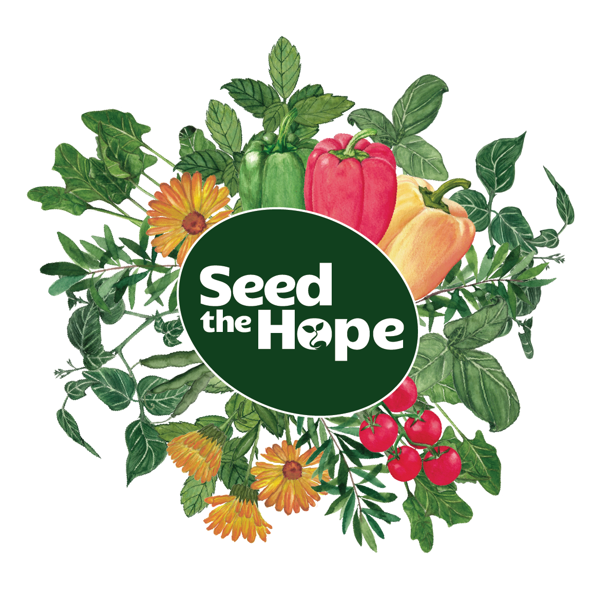

SOCIAL INITIATIVE
Seed the Hope Founder
A social initiative that uses planting as gentle therapy for survivors. I designed the brand identity, packaging and service experience. Next is a healing journal pilot.

ABOUT
I'm Anisa, UX/UI & Graphic Designer.
I bridge UX research and visual design to ship work that’s clear, accessible and thoughtful.
Open to opportunities · Vancouver · Remote


UX/UI Projects
Case studies: Recycle Right, Subway Kiosk, CirclesUBI and others. Roles: UX/UI research, IA, ideation, prototyping, product management.

Graphic Design Projects
Branding, packaging and print for small businesses. Clients: LinHan Interiors & Co, Atlantia Co, YannieMa Photography.